Now that you have all Edge Routers and Border Routers peered with regional controllers, and completed the MRF migration. In this task you will clean up the temporary policy and disable migration mode.
After all devices are moved to MRF, the flat/default controller can be re-purposed to other region. In this lab, you will re-purpose Controller-4 to region 0's controller.
Step 1: Remove route-map
- Go to Configuration > Templates > Feature templates, look up for cEDGE_HUB_VPN-10_BGP_FT and edit to remove route-map you completed in task 4.
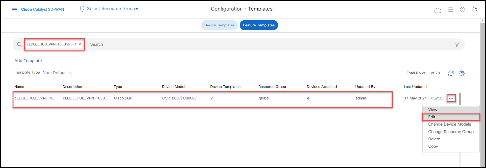
- Under UNICAST ADDRESS FAMILY, click pencil to edit the OMP redistribution policy.

- Remove associated the route policy by changing it to default, and Save Changes

- Under NEIGHBOR section, click pencil to edit the policy associate the BGP neighbor.
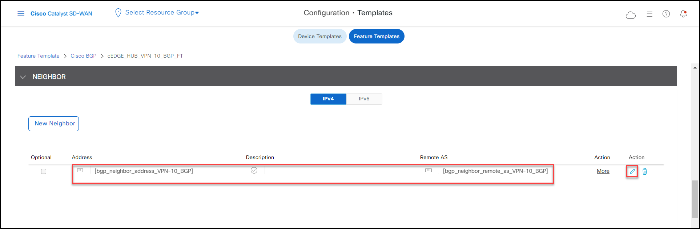
- Remove associated outbound route policy by changing Route Policy Out to Off.
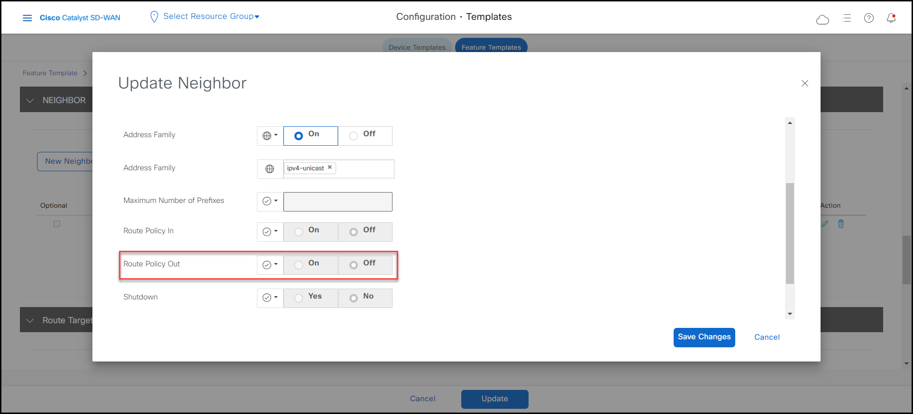
- Click Save Changes then Update to trigger the configuration change. Click Configure Devices to remove the loop prevention BGP route policy you applied on task 4 on all 4 Border Routers.
Step 2: Disable Migration Mode
- Go to Configuration > Templates > Feature templates, look up for cEDGE_BORDER-WEST-201_SYSTEM_FT and edit it.

- Change Enable Migration Mode to Multi-Region Fabric field to Default. This will disable the migration mode and therefor the West Border router will keepthe OMP session to West Region aware controller-1 (1.1.1.3), and the Core region Controller-3 (1.1.1.5), but will remove the OMP peering to default/flat overlay Controller-4 (1.1.1.6) used for the migration.

- Click Update, then Next and thenn Configure Devices to disable the migration mode on both West Border routers.
Repeat the same process to disable Migration Mode for East Border routers.
- Go to Configuration > Templates > Feature templates, look up for cEDGE_BORDER-EAST-202_SYSTEM_FT and edit it.

- Change Enable Migration Mode to Multi-Region Fabric field to Default. This will disable the migration mode and therefor the East Border router will keepthe OMP session to West Region aware controller-2 (1.1.1.4), and the Core region Controller-3 (1.1.1.5), but will remove the OMP peering to default/flat overlay Controller-4 (1.1.1.6) used for the migration.

- Click Update, then Next and thenn Configure Devices to disable the migration mode on both East Border routers.
Repeat the same process to disable Migration Mode for West Edge routers.
- Go to Configuration > Templates > Feature templates, look up for cEDGE_EDGE-WEST_SYSTEM_FT and edit it.
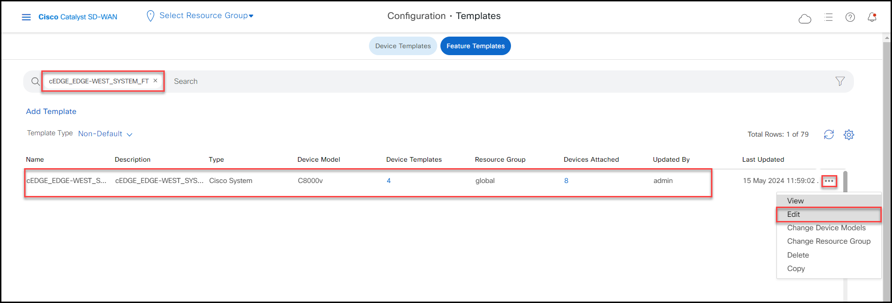
- Change Enable Migration Mode to Multi-Region Fabric field to Default. This will disable the migration mode and therefor the West Region Edge devices will keep the OMP session to West Region aware controller-1 (1.1.1.3), and remove the OMP peering to default/flat overlay Controller-4 (1.1.1.6) used for the migration.
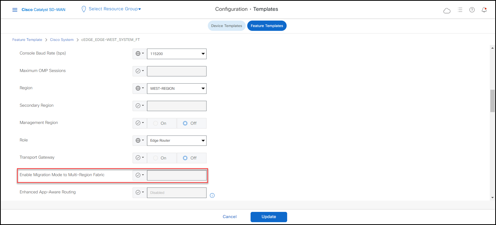
- Click Update, then Next and thenn Configure Devices to disable the migration mode on all West Edge routers.
Repeat the same process to disable Migration Mode for East Edge routers.
- Go to Configuration > Templates > Feature templates, look up for cEDGE_EDGE-EAST_SYSTEM_FT and edit it.
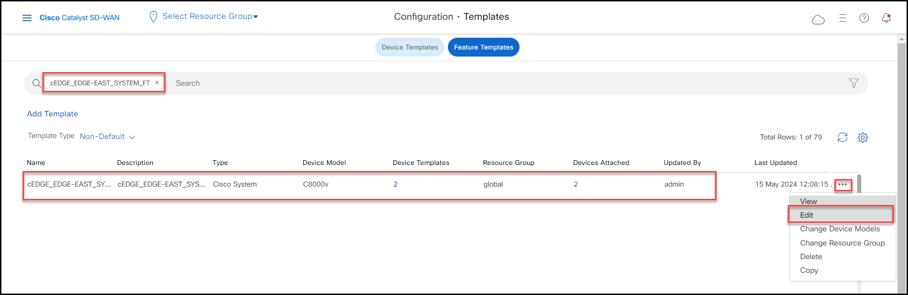
- Change Enable Migration Mode to Multi-Region Fabric field to Default. This will disable the migration mode and therefor the East Region Edge devices will keep the OMP session to West Region aware controller-2 (1.1.1.4), and remove the OMP peering to default/flat overlay Controller-4 (1.1.1.6) used for the migration.

- Click Update, then Next and thenn Configure Devices to disable the migration mode on all East Edge routers.
Step 3: Re-purpose default controller
After disable migration mode on all border and Edge devices, the default/flat overlay Controller-4 (1.1.1.6) is no longer peering with any device. In this step, you will re-purpose reposition this controller to the Core region for redundancy.
Note
This is an optional task.
- Go to Configuration > Templates > Device Templates, look up for the device template of controller for core region CONTROLLER-3_DT and Attach Devices.

- Select Controller-4 from Available Devices window move it to Selected Devices window, then click 'Attach' and then 'Next'.
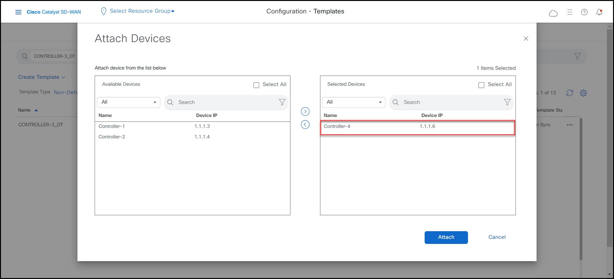
- Configure Devices to push the configuration. This moves Controller-4 to Core region.
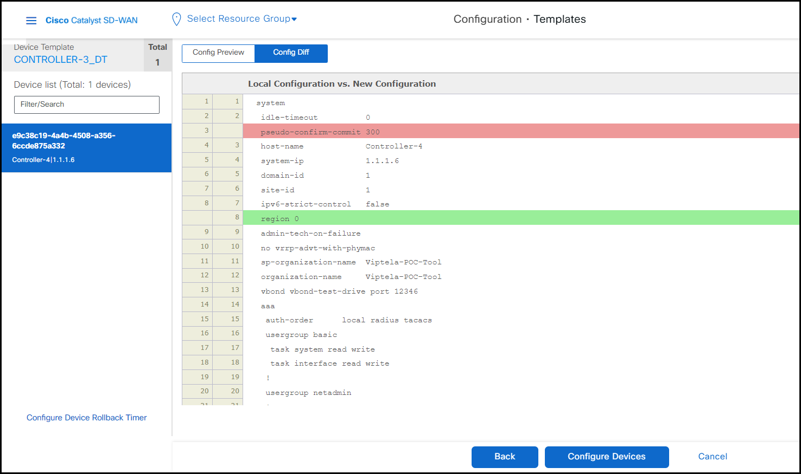
Step 4: De-active current Centralized Policy and remove BGP core
As MRF by default makes inte-region connections via core region, the centralized policy configured in flat fabric becomes unnecessary. Let's deactive the current centralized policy and remove the BGP core between borders.
Note
In this lab, no service in the core region hence you will remove the service VPN and BGP in core region.
-
Go to Configuration > Policies and deactivate the current active Centralized Policy OMP_CORE_TLOCS_POLICY
-
Click Deactivate and Deactivate once again.
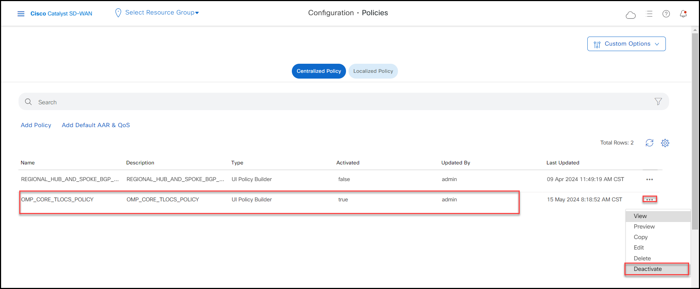
-
You can remove the BGP core by shutting down the service VPN 10 interfaces on all Hubs that were used for the BGP core. This ensures the inter-region communication uses the Fabric we created at the Core with the Private1 TLOCs.
-
Go to Configuration > Templates > Device Templates; look up for cEDGE_SITE-201_DT device template and now click on Change Device Values.
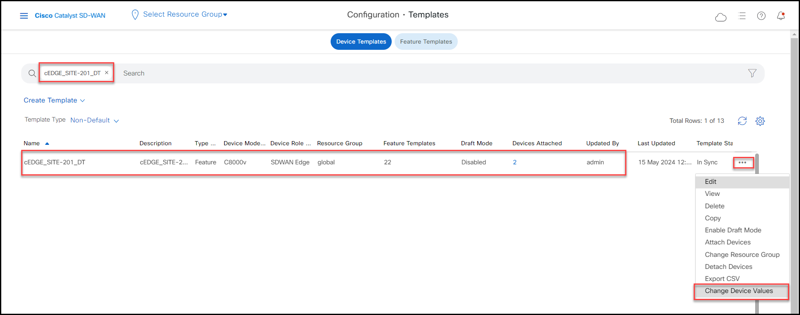
-
Scroll to the right and mark the checkbox or click on the three dots to shut down the VPN-10_CHILD_IF-1 interfaces on both Border Routers BR-WEST-1 and BR-WEST-2.
-
Click Next and then Configure Devices.
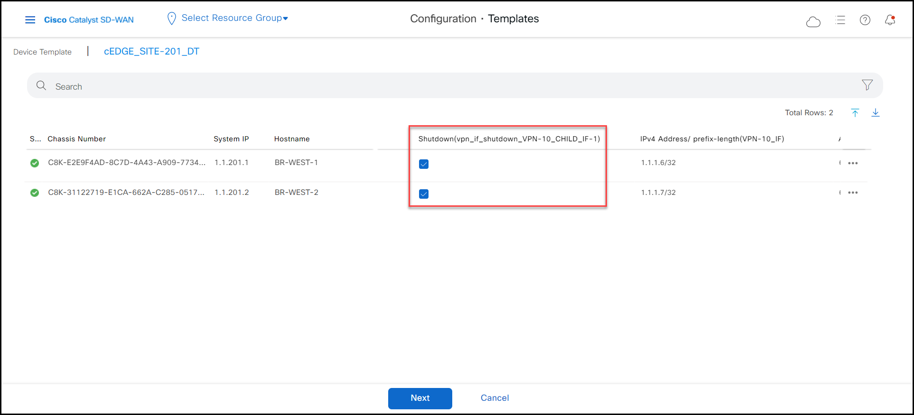
Note
Repeat the same process for cEDGE_SITE-202_DT Device Template to shutdown VPN 10 interfaces on BR-EAST-1 and BR-EAST-2.
Now, Let's verify the connectivity between Site 3000 and Site 6000 from Ubuntu VM and check the path from traceroute.
-
Open mRemoteNG RDP to host Site-3000-VPN-10-Ubun. Ping and trace the Ubuntu host located in Site 6000 with IP 10.60.1.101
-
As we can see below, both are still reachable and the traffic is still going through the Fabric we created in the Core, but now without a such complex Control Policy.

Success